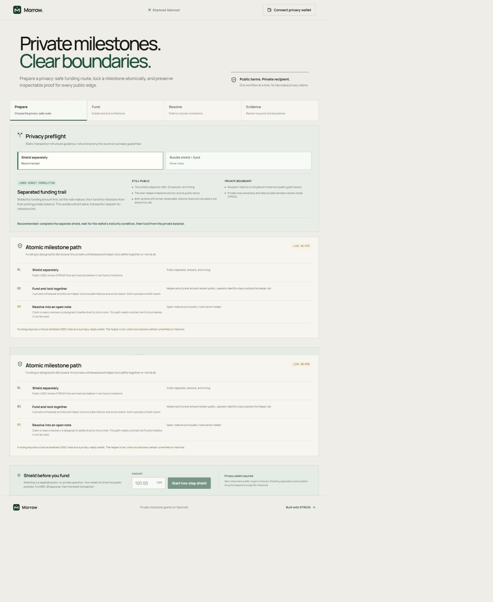
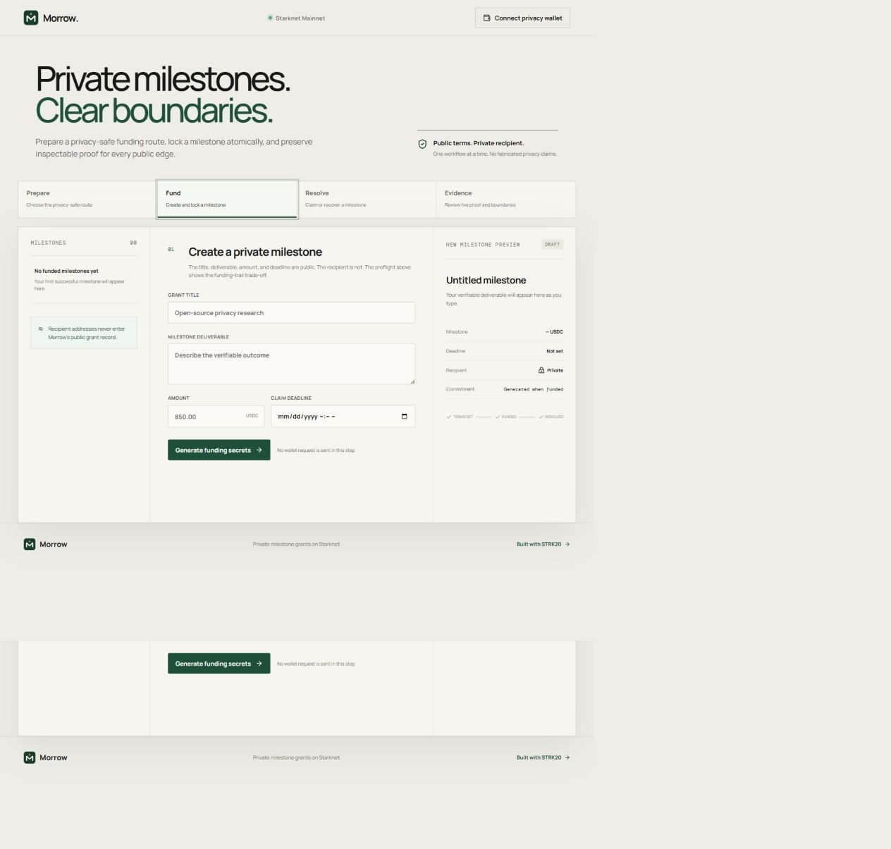
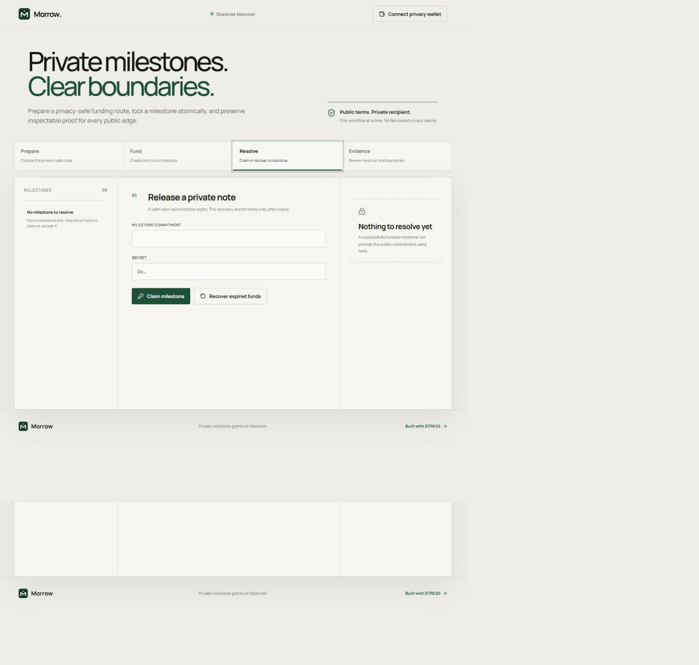

<!doctype html>
<html lang="en">
<head>
  <meta charset="UTF-8" />
  <meta name="viewport" content="width=device-width, initial-scale=1.0" />
  <title>Morrow demo storyboard</title>
  <style>
    * { box-sizing: border-box; }
    :root { --ink:#111915; --paper:#f2f0e9; --green:#14563f; --mint:#dce9df; --line:#b9b7ad; --white:#fff; }
    body { margin:0; width:1920px; height:1080px; overflow:hidden; background:var(--paper); color:var(--ink); font-family:Arial,Helvetica,sans-serif; }
    .scene { width:100%; height:100%; padding:74px 92px 64px; position:relative; display:flex; flex-direction:column; }
    .scene.dark { background:#102d22; color:white; }
    .top { display:flex; justify-content:space-between; align-items:center; border-bottom:1px solid currentColor; padding-bottom:24px; opacity:.95; }
    .brand { display:flex; align-items:center; gap:18px; font-weight:800; font-size:30px; }
    .brand img { width:54px; height:54px; }
    .tag { text-transform:uppercase; font:18px monospace; letter-spacing:.16em; opacity:.7; }
    .content { flex:1; display:grid; grid-template-columns:1fr 1fr; gap:78px; align-items:center; }
    h1 { font-size:92px; line-height:.98; letter-spacing:-.055em; margin:0 0 32px; max-width:1050px; }
    h2 { font-size:62px; line-height:1.03; letter-spacing:-.04em; margin:0 0 26px; }
    p { font-size:31px; line-height:1.4; margin:0; max-width:900px; color:#4c554f; }
    .dark p { color:#d7e2dc; }
    .accent { color:#58c095; }
    .screen { border:1px solid #aaa79c; box-shadow:0 28px 70px rgba(16,35,27,.18); background:#fff; overflow:hidden; }
    .screen img { width:100%; height:100%; object-fit:cover; object-position:top; display:block; }
    .screen.wide { height:570px; }
    .screen.full { position:absolute; left:92px; right:92px; top:185px; bottom:135px; }
    .screen.full img { object-fit:cover; }
    .caption { position:absolute; left:92px; right:92px; bottom:42px; display:flex; justify-content:space-between; align-items:flex-end; gap:40px; }
    .caption strong { font-size:28px; max-width:1450px; }
    .caption span { font:17px monospace; letter-spacing:.08em; opacity:.65; white-space:nowrap; }
    .cards { display:grid; grid-template-columns:repeat(3,1fr); gap:1px; background:var(--line); border:1px solid var(--line); }
    .card { background:var(--paper); padding:42px; min-height:280px; }
    .dark .card { background:#15392b; }
    .card b { display:block; font:18px monospace; letter-spacing:.12em; color:#428a6d; margin-bottom:62px; }
    .card strong { display:block; font-size:32px; margin-bottom:16px; }
    .card p { font-size:22px; }
    .proof { display:flex; flex-direction:column; gap:18px; }
    .proof-row { display:grid; grid-template-columns:90px 1.3fr 1fr 210px; align-items:center; padding:24px 28px; background:#fff; border:1px solid #c7c5bc; font-size:23px; }
    .proof-row i { color:#197452; font-style:normal; font-weight:800; }
    .proof-row code { font-size:18px; }
    .pill { justify-self:end; background:var(--mint); color:#14563f; padding:10px 17px; font:16px monospace; text-transform:uppercase; }
    .flow { display:flex; align-items:center; gap:24px; margin-top:54px; }
    .node { flex:1; border:1px solid currentColor; padding:30px; min-height:155px; }
    .node b { font-size:24px; display:block; margin-bottom:13px; }
    .node span { font-size:20px; opacity:.74; }
    .arrow { font-size:42px; opacity:.45; }
    .eyebrow { font:18px monospace; letter-spacing:.14em; text-transform:uppercase; color:#428a6d; margin-bottom:24px; }
    .big-number { font-size:170px; line-height:.8; letter-spacing:-.08em; font-weight:800; color:#58c095; }
    .footer-note { position:absolute; bottom:45px; left:92px; font:17px monospace; opacity:.65; }
    .qrless { font-size:25px; border:1px solid currentColor; padding:18px 24px; display:inline-block; margin-top:35px; }
  </style>
</head>
<body><main id="root"></main>
<script>
const scenes = [
  {dark:true, tag:'STRK20 PRIVATE SPRINT', html:`<div class="content"><div><div class="eyebrow">Private milestone grants</div><h1>Public terms.<br><span class="accent">Private recipient.</span></h1><p>Morrow lets a sponsor fund an inspectable milestone without publishing who receives it.</p></div><div class="screen wide"></div></div>`},
  {tag:'THE PROBLEM', html:`<div class="content"><div><h2>Transparency should not become surveillance.</h2><p>Conventional grant payments expose the funder, recipient, amount, timing, and future wallet activity as one permanent public graph.</p></div><div class="cards"><div class="card"><b>01</b><strong>Public terms</strong><p>Amount, deadline, and milestone remain accountable.</p></div><div class="card"><b>02</b><strong>Private identity</strong><p>The recipient address never enters Morrow’s grant record.</p></div><div class="card"><b>03</b><strong>Verifiable edges</strong><p>Funding and resolution still leave inspectable receipts.</p></div></div></div>`},
  {dark:true, tag:'PRIVACY PREFLIGHT', html:`<div class="content"><div><h2>Choose the privacy boundary before signing.</h2><p>Morrow recommends shielding separately, waiting for note maturity, then funding from an existing private balance. It explains what remains public—without inventing an anonymity score.</p></div><div class="screen wide"></div></div>`},
  {tag:'ATOMIC FUNDING', html:`<div class="content"><div><div class="eyebrow">One user decision</div><h2>Withdraw privately.<br>Lock publicly.<br>Or revert together.</h2><p>A single STRK20 action batch combines the private withdrawal with MorrowEscrow funding.</p><div class="flow"><div class="node"><b>Shielded USDC</b><span>Private note input</span></div><div class="arrow">→</div><div class="node"><b>MorrowEscrow</b><span>Public milestone lock</span></div></div></div><div class="screen wide"></div></div>`},
  {dark:true, tag:'SECRET SAFETY', html:`<div class="content"><div><h2>Two secrets.<br>Two mutually exclusive endings.</h2><p>The recipient receives a claim secret. The operator keeps a recovery secret. Both are generated locally, shown once, and never written to the public grant record.</p></div><div class="cards"><div class="card"><b>CLAIM</b><strong>Recipient path</strong><p>Unlocks the milestone into a new private note.</p></div><div class="card"><b>RECOVER</b><strong>Operator path</strong><p>Available only after the public deadline.</p></div><div class="card"><b>GUARD</b><strong>One resolution</strong><p>The first valid path permanently closes the other.</p></div></div></div>`},
  {tag:'RESOLUTION', html:`<div class="content"><div><h2>A payout without a public recipient address.</h2><p>The claimant submits the public commitment and matching secret. MorrowEscrow resolves the milestone while STRK20 creates the recipient’s private output.</p></div><div class="screen wide"></div></div>`},
  {dark:true, tag:'MAINNET EVIDENCE', html:`<div class="content"><div><div class="big-number">3</div><h2>helper-mediated proofs</h2><p>Funding, another funding operation, and a completed claim all touched both the canonical STRK20 pool and MorrowEscrow on Starknet Mainnet.</p></div><div class="proof"><div class="proof-row"><i>01</i><strong>Milestone funded</strong><code>0x02c68b…e75ea</code><span class="pill">Succeeded</span></div><div class="proof-row"><i>02</i><strong>Milestone funded</strong><code>0x0251d0…cf680</code><span class="pill">Succeeded</span></div><div class="proof-row"><i>03</i><strong>Milestone claimed</strong><code>0x03992f…bc229</code><span class="pill">Succeeded</span></div></div></div>`},
  {tag:'INSPECTABLE PROOF', html:`<div class="content" style="grid-template-columns:.72fr 1.28fr"><div><h2>Every public proof, in one place.</h2><p>Each registered receipt is checked against successful Mainnet execution and the expected pool or helper event.</p></div><div class="proof"><div class="proof-row"><i>01</i><strong>Shield deposit</strong><code>0x074d1a…35771</code><span class="pill">Verified</span></div><div class="proof-row"><i>02</i><strong>Shield deposit</strong><code>0x014260…fd852</code><span class="pill">Verified</span></div><div class="proof-row"><i>03</i><strong>Milestone funding</strong><code>0x02c68b…e75ea</code><span class="pill">Verified</span></div><div class="proof-row"><i>04</i><strong>Milestone funding</strong><code>0x0251d0…cf680</code><span class="pill">Verified</span></div><div class="proof-row"><i>05</i><strong>Milestone claimed</strong><code>0x03992f…bc229</code><span class="pill">Verified</span></div></div></div>`},
  {dark:true, tag:'FAILURE-AWARE UX', html:`<div class="content"><div><h2>The wallet can finish even when the browser does not.</h2><p>Morrow bounds every pending wallet request, then reconciles the matching pool or escrow event on-chain. A confirmed transaction is recovered instead of leaving the interface spinning forever.</p></div><div class="flow"><div class="node"><b>Wallet request</b><span>15-second UI boundary</span></div><div class="arrow">→</div><div class="node"><b>On-chain check</b><span>Commitment-indexed event</span></div><div class="arrow">→</div><div class="node"><b>Truthful status</b><span>Hash or safe retry guidance</span></div></div></div>`},
  {tag:'PRIVACY, PRECISELY', html:`<div class="content"><div><h2>Morrow hides the link that matters.</h2><p>Grant terms, helper activity, amount, and timing remain public. Recipient identity, note ownership, and later private movement stay inside STRK20. Morrow describes that boundary plainly.</p></div><div class="cards"><div class="card"><b>PUBLIC</b><strong>Accountability</strong><p>Terms · amount · deadline · state</p></div><div class="card"><b>PRIVATE</b><strong>Recipient link</strong><p>Address · note owner · later movement</p></div><div class="card"><b>HONEST</b><strong>No magic claims</strong><p>No fabricated score or absolute guarantee</p></div></div></div>`},
  {dark:true, tag:'MORROW', html:`<div class="content"><div><div class="eyebrow">Built on Starknet Mainnet</div><h1>Fund the work.<br><span class="accent">Not the surveillance.</span></h1><p>Private milestone grants with STRK20 and inspectable public proof.</p><div class="qrless">morrow-production.up.railway.app</div></div><div></div></div><div class="footer-note">OPEN SOURCE · MIT LICENSE · STARKNET MAINNET</div>`}
];
const index = Math.max(0, Math.min(scenes.length - 1, Number(new URLSearchParams(location.search).get('scene') || 0)));
const scene = scenes[index];
document.getElementById('root').innerHTML = `<section class="scene ${scene.dark?'dark':''}"><header class="top"><div class="brand">Morrow.</div><div class="tag">${scene.tag}</div></header>${scene.html}</section>`;
</script></body></html>
